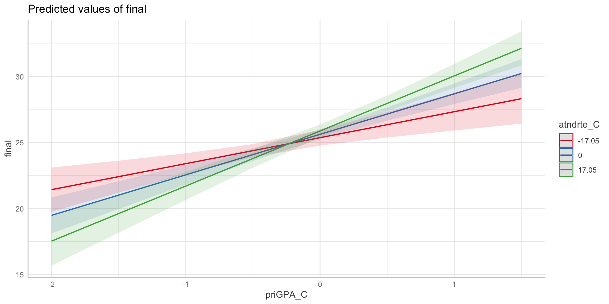
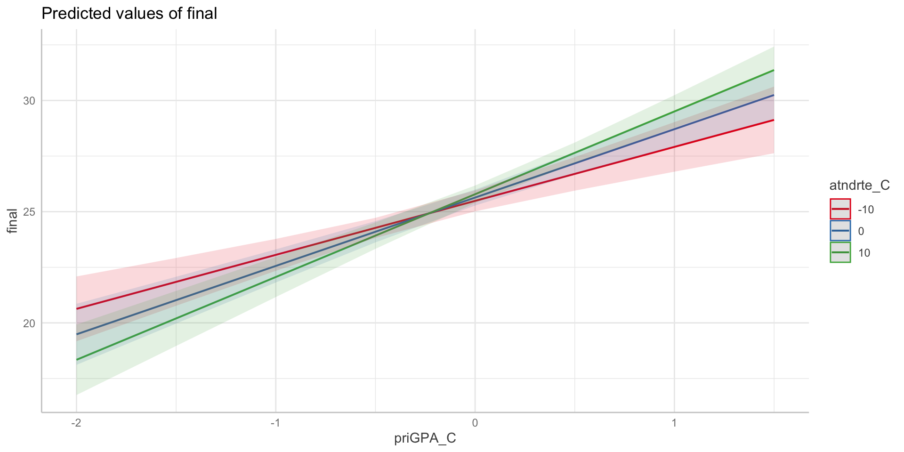
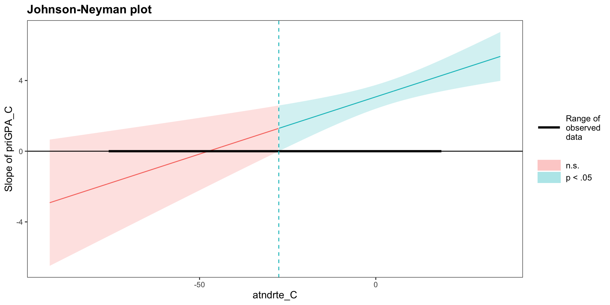

lm(DV ~ IV1 * IV2, dat): moderation (interactive) modelmodel.m: fitted lm() object for path “a”model.y: fitted lm() object for paths “b” and “c’”treat: name of the treatment variable (\(x\))mediator: name of the mediator variable (\(m\))boot = TRUE: use simulation to find resultToday we’ll work with another educational dataset, this one a survey of college students. The variables that we’ll work with include:
To illustrate a moderation analysis, we will predict final exam scores from prior GPA, using attendance rate as a moderator. In other words, we want to know whether the linear regression of final exam scores on prior GPA changes as a function of attendance rate.
First, we want to center the predictors, prior GPA and attendance rate. To center variables, subtract the mean from each score. It is usually convenient to add centered variables to the dataset:
Call:
lm(formula = final ~ priGPA_C * atndrte_C, data = dat)
Residuals:
Min 1Q Median 3Q Max
-16.4387 -2.8093 -0.2672 3.0143 11.3030
Coefficients:
Estimate Std. Error t value Pr(>|t|)
(Intercept) 25.63475 0.18284 140.202 < 2e-16 ***
priGPA_C 3.07500 0.34254 8.977 < 2e-16 ***
atndrte_C 0.01494 0.01236 1.209 0.227255
priGPA_C:atndrte_C 0.06474 0.01881 3.441 0.000614 ***
---
Signif. codes: 0 '***' 0.001 '**' 0.01 '*' 0.05 '.' 0.1 ' ' 1
Residual standard error: 4.354 on 676 degrees of freedom
Multiple R-squared: 0.1491, Adjusted R-squared: 0.1454
F-statistic: 39.5 on 3 and 676 DF, p-value: < 2.2e-16The \(t\)-test for the moderation effect is statistically significant at \(\alpha = .05\): \(t(676) = 3.44, p < .001\).
Exactly as we did for 2-Way ANOVA, we now need to evaluate the main effects at different values of the moderator!
To probe the moderation effect, we can plug in different values of the moderator.
For example:
ggeffectsWe can also use ggeffects to do a moderation plot for us. By default, it will give us three lines at 1 SD below the mean of the moderator, at the mean of the moderator, and 1 SD above the mean of the moderator
Plot on next slide
ggefffects
ggefffectsWe can also choose different custom values of the moderator by putting them in square brackets. This might make sense if there are special values of the moderator of interest. for example, let’s say we wanted lines at -10, 0, and 10 for attendance centered.
Plot on next slide
ggefffects
interactions PackageCreate a sim_slopes object with the sim_slopes() function.
This results in a list object that contains both numerical information about simple slopes and a Johnson-Neyman plot
You can print the values of the slopes of the focal predictor at different values of the moderator:

Path diagram for the single mediator model:
For illustration, we will again model final exam scores as the outcome (\(y\)), but now with ACT scores as the predictor (\(x\)), and termgpa as a potential mediator (\(m\)).
The first thing we need to do is fit two regression models:
Mediator m ~ predictor x
Outcome y ~ predictor x + mediator m
Estimate Std. Error t value Pr(>|t|)
(Intercept) 1.434 0.179 8.015 0
ACT 0.052 0.008 6.598 0 Estimate Std. Error t value Pr(>|t|)
(Intercept) 10.802 1.019 10.599 0
ACT 0.339 0.044 7.676 0
termgpa 2.871 0.209 13.731 0For the bootstrapping, we feed the mod_m and mod_y objects to the mediate function from the mediation package. Because this method requires random sampling (here, over 1,000 bootstrap samples), it takes a few seconds to run.
Causal Mediation Analysis
Nonparametric Bootstrap Confidence Intervals with the Percentile Method
Estimate 95% CI Lower 95% CI Upper p-value
ACME 0.148797 0.099732 0.208675 < 2.2e-16 ***
ADE 0.338608 0.250386 0.422386 < 2.2e-16 ***
Total Effect 0.487406 0.387096 0.584332 < 2.2e-16 ***
Prop. Mediated 0.305284 0.214259 0.415819 < 2.2e-16 ***
---
Signif. codes: 0 '***' 0.001 '**' 0.01 '*' 0.05 '.' 0.1 ' ' 1
Sample Size Used: 680
Simulations: 1000 The estimated mediation effect \(\hat{a}\times \hat{b}\) is .149 (ACME), and is significantly different from zero, 95% CI = [.098, .209].
(Results shown on the next slide might vary by a slight amount due to the variability associated with random sampling.)
Causal Mediation Analysis
Nonparametric Bootstrap Confidence Intervals with the Percentile Method
Estimate 95% CI Lower 95% CI Upper p-value
ACME 0.14880 0.10054 0.19959 < 2.2e-16 ***
ADE 0.33861 0.26081 0.42216 < 2.2e-16 ***
Total Effect 0.48741 0.40106 0.57749 < 2.2e-16 ***
Prop. Mediated 0.30528 0.21652 0.40224 < 2.2e-16 ***
---
Signif. codes: 0 '***' 0.001 '**' 0.01 '*' 0.05 '.' 0.1 ' ' 1
Sample Size Used: 680
Simulations: 1000 The lavaan package provides another way to fit a mediation model that makes it easier to handle missing data
First, we use lavaan-specific syntax to fit the model
final, termgpa, and ACT are columns in the data set
a, b, and c are user-provided labels for regression coefficients
~ indicates regression, := indicates a calculated combination of parameters
We can fit this model using the sem function from lavaan
se = "boot" means to calculate bootstrapped standard errors
bootstrap indicates the number of bootstrap replications
lavaan 0.6-19 ended normally after 1 iteration
Estimator ML
Optimization method NLMINB
Number of model parameters 5
Number of observations 680
Model Test User Model:
Test statistic 0.000
Degrees of freedom 0
Parameter Estimates:
Standard errors Bootstrap
Number of requested bootstrap draws 1000
Number of successful bootstrap draws 1000
Regressions:
Estimate Std.Err z-value P(>|z|)
final ~
termgpa (b) 2.871 0.222 12.955 0.000
ACT (c) 0.339 0.045 7.604 0.000
termgpa ~
ACT (a) 0.052 0.008 6.736 0.000
Variances:
Estimate Std.Err z-value P(>|z|)
.final 15.064 0.836 18.025 0.000
.termgpa 0.509 0.032 16.151 0.000
Defined Parameters:
Estimate Std.Err z-value P(>|z|)
ind 0.149 0.026 5.734 0.000
tot 0.487 0.048 10.148 0.000In lecture, we learned about multiple imputation and maximum likelihood as methods to account for missing data.
In our dataset, there are 6 missing values of hwrte.
In the following slides, we will illustrate these methods for the following regression:
termgpa ~ priGPA + hwrtelavaanThe lavaan package requires specifying the model as a character string first:
Then, we fit the model with the sem function
std.ov = TRUE means to standardize variables - this can help estimation work correctly and avoid errors
missing = "FIML" uses Full Information Maximum Likelihood to estimate parameters from all available data
fixed.x = FALSE ensures proper missing data handling if there is missing data in the predictors
estimator = "MLR" uses maximum likelihood estimation with robust standard errors, which is preferable when data are not normally distributed
lavaanThe output gives a lot more information that we’re used to from lm
termgpa ~ are the regression coefficients such that\[\widehat{termgpa} = .003 + .547 \times priGPA + .340 \times hwrte\]
Parameter Estimates:
Standard errors Sandwich
Information bread Observed
Observed information based on Hessian
Regressions:
Estimate Std.Err z-value P(>|z|)
termgpa ~
priGPA 0.547 0.029 18.837 0.000
hwrte 0.340 0.034 9.926 0.000
Covariances:
Estimate Std.Err z-value P(>|z|)
priGPA ~~
hwrte 0.312 0.043 7.202 0.000
Intercepts:
Estimate Std.Err z-value P(>|z|)
.termgpa 0.003 0.026 0.117 0.907
priGPA 0.000 0.038 0.000 1.000
hwrte -0.009 0.039 -0.231 0.817
Variances:
Estimate Std.Err z-value P(>|z|)
.termgpa 0.468 0.030 15.405 0.000
priGPA 0.999 0.051 19.653 0.000
hwrte 1.007 0.091 11.030 0.000miceThe mice function in the mice package is useful for multiple imputation
m = 5 argument means to create 5 imputed data setsWe can look to see what the imputed values are:
mice and lmThe mice also includes functions to fit the model to the imputed datasets and pool results
term estimate std.error statistic df p.value
1 (Intercept) -0.45155293 0.11074244 -4.077506 671.0017 5.098293e-05
2 priGPA 0.73189435 0.03716633 19.692403 674.2179 1.527842e-68
3 hwrte 0.01324588 0.00102768 12.889114 671.0848 4.028197e-34mice and brmsA Bayesian alternative to pooling with lm and mice is to use the brm_multiple function in the brms package
Family: gaussian
Links: mu = identity
Formula: termgpa ~ priGPA + hwrte
Data: imputed_data (Number of observations: 680)
Draws: 20 chains, each with iter = 2000; warmup = 1000; thin = 1;
total post-warmup draws = 20000
Regression Coefficients:
Estimate Est.Error l-95% CI u-95% CI
Intercept -0.45 0.11 -0.67 -0.23
priGPA 0.73 0.04 0.66 0.81
hwrte 0.01 0.00 0.01 0.02
Further Distributional Parameters:
Estimate Est.Error l-95% CI u-95% CI
sigma 0.50 0.01 0.48 0.53
Draws were sampled using sampling(NUTS). Overall Rhat and ESS estimates
are not informative for brm_multiple models and are hence not displayed.
Please see ?brm_multiple for how to assess convergence of such models.